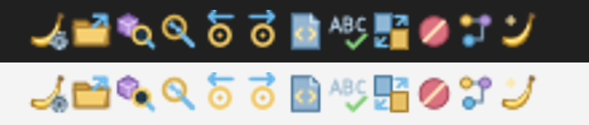
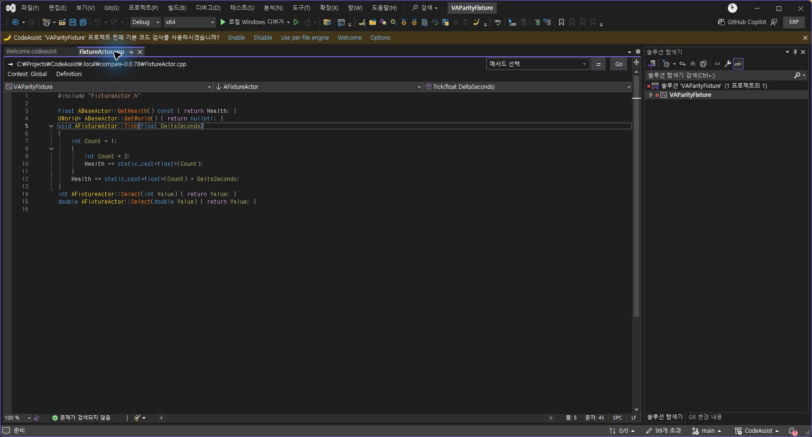

아이콘12개 제작·연결·설치 완수. 다크/라이트 배경 자산 검사, 실제 설정·파일3개·심볼19개·Welcome 버튼4종 클릭 검증 완료. 설치 바이너리6개 일치.

전체 유사도 미산정·부분대응108개·완전검증0/108. 편집기14개 결과는0.0.79 검사이며0.0.80 최종 검사로 재사용하지 않습니다. 앞선 진행 메시지의 0.0.80 편집기 검사 완료 표현을 정정합니다.
검증 기록 · 설치 해시
